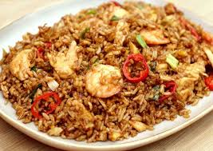
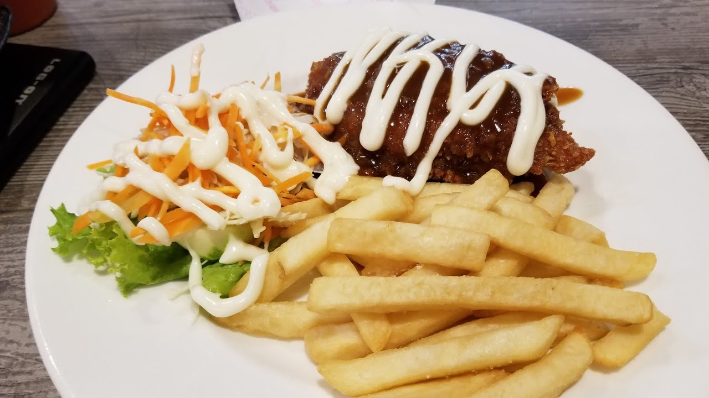
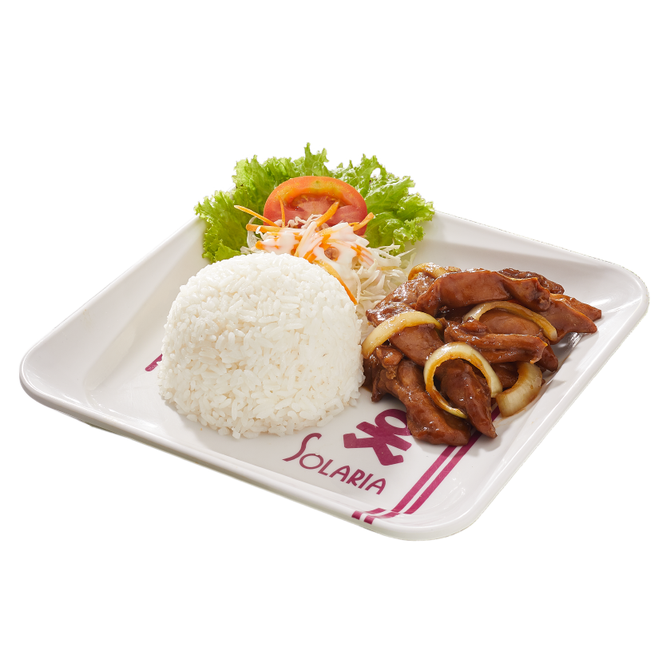

Home
Menu
Promotion
Social Media Links
Special Features
Outdoor
Delivery
Wide Menu Selection
Popular Dishes
Nasi Goreng Spesial
Nasi Goreng Spesial is a flavorful fried rice mixed with a variety of ingredients like vegetables, chicken, shrimp, and sometimes beef. It's seasoned with soy sauce and garlic and usually comes with fried shallots and prawn crackers on the side.
Chicken Mozzarella
Chicken Mozzarella is a dish with a chicken breast that's grilled or baked and topped with melted mozzarella cheese. It often comes with vegetables or mashed potatoes and is served with a tasty tomato sauce. It's a delicious and filling meal.
Nasi Ayam Teriyaki
Nasi Ayam Teriyaki includes chicken cooked in a sweet and savory sauce called teriyaki, served with rice. The dish often comes with vegetables and might be topped with sesame seeds or green onions. It's a tasty and filling meal.
 
